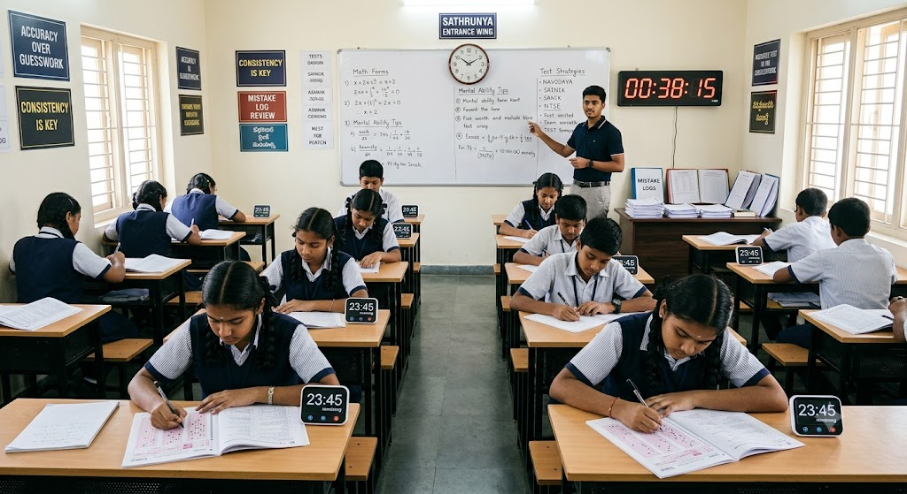

Primary Education Wing (Grades 1 to 5)
Foundational Wing: Discovery & Experiential Learning

Overview: The early years should spark curiosity, not exhaust young minds with mechanical
reading and
writing drills. Our primary curriculum transitions children from textbook memorization to interactive,
tactile exploration where every fundamental concept is understood through practice.
Core Offerings:
Activity-Based Foundations: Math and environmental science learned through physical models, nature observation, and practical demonstrations.
Language & Communication Mastery: Phonics, conversational clarity, and confidence-building rather than repetitive copying from the blackboard.
Early Digital & Logical Literacy: Introductory computer exposure and simple puzzle-solving to build cognitive agility early.
Curiosity Hours: Dedicated daily time for students to ask questions, dismantle simple mechanisms, and explore real-world phenomena.
Core Offerings:
Activity-Based Foundations: Math and environmental science learned through physical models, nature observation, and practical demonstrations.
Language & Communication Mastery: Phonics, conversational clarity, and confidence-building rather than repetitive copying from the blackboard.
Early Digital & Logical Literacy: Introductory computer exposure and simple puzzle-solving to build cognitive agility early.
Curiosity Hours: Dedicated daily time for students to ask questions, dismantle simple mechanisms, and explore real-world phenomena.
Secondary Education Wing (Grades 6 to 10)
Concept Application & Analytical Thinking

Overview: High school education often traps students in a cycle of cramming for board marks.
Sathrunya School bridges state-standard syllabi with real-world industry application, fostering critical
thinking, deep conceptual retention, and technical aptitude.
Core Offerings:
Applied Sciences & Mathematics: Lab-first methodology for Physics, Chemistry, Biology, and Advanced Math—learning principles through experimentation before theory.
Practical Technology Training: Hands-on computing, logical problem-solving, and practical digital skills essential for modern careers.
Communication & Life Skills: Presentation workshops, debate, financial basics, and real-life problem-solving tasks integrated into the weekly schedule.
Continuous Diagnostic Mentorship: Regular assessments focused on identifying concept gaps without the pressure or anxiety of traditional ranking systems.
Core Offerings:
Applied Sciences & Mathematics: Lab-first methodology for Physics, Chemistry, Biology, and Advanced Math—learning principles through experimentation before theory.
Practical Technology Training: Hands-on computing, logical problem-solving, and practical digital skills essential for modern careers.
Communication & Life Skills: Presentation workshops, debate, financial basics, and real-life problem-solving tasks integrated into the weekly schedule.
Continuous Diagnostic Mentorship: Regular assessments focused on identifying concept gaps without the pressure or anxiety of traditional ranking systems.
Integrated Competitive Entrance Wing
Competitive Entrance & Foundation Training

Overview: Quality entrance exam preparation should not be an expensive monopoly restricted to
elite coaching centers. We integrate specialized competitive training directly into our standard
academic timetable at zero excessive cost.
Key Coaching Modules:
Navodaya & Sainik School Preparation: Specialized aptitude, mental ability, mathematics, and language drills for junior grade entrance tests.
STEM Olympiad & NTSE Track: Advanced analytical training, logic puzzles, and conceptual problem-solving workshops for national talent exams.
Pre-Engineering & Medical Foundations (Grades 8–10): Early, stress-free exposure to core concepts required for future JEE, NEET, and technical careers.
Daily Practice & Doubt-Solving Circles: Dedicated mentor hours to solve previous years' papers and build test-taking speed and accuracy.
Key Coaching Modules:
Navodaya & Sainik School Preparation: Specialized aptitude, mental ability, mathematics, and language drills for junior grade entrance tests.
STEM Olympiad & NTSE Track: Advanced analytical training, logic puzzles, and conceptual problem-solving workshops for national talent exams.
Pre-Engineering & Medical Foundations (Grades 8–10): Early, stress-free exposure to core concepts required for future JEE, NEET, and technical careers.
Daily Practice & Doubt-Solving Circles: Dedicated mentor hours to solve previous years' papers and build test-taking speed and accuracy.